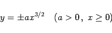
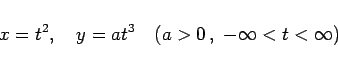
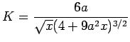
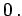
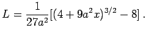
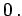
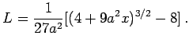

Die Gleichung
|  | (2.214a) |
oder in Parameterform
|  | (2.214b) |
liefert die semikubische Parabel.
Im Koordinatenursprung gibt es einen Rückkehrpunkt, Asymptoten gibt es keine. Die Krümmung  durchläuft alle Werte von  bis  Der Kurvenbogen hat zwischen dem Koordinatenursprung und einem Kurvenpunkt P(x,y) die Länge 
bis  Der Kurvenbogen hat zwischen dem Koordinatenursprung und einem Kurvenpunkt P(x,y) die Länge 